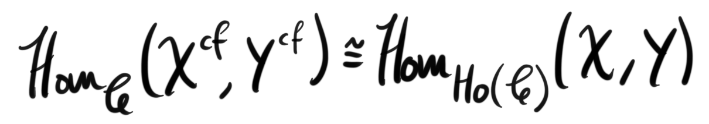

This is part 9 of a series leading up to and exploring model categories. For the other parts see 1, 2, 3, 4, 5 6, 7 and 8.
Last time we ended by giving a definition of a homotopy between maps on the collection of bifibrant objects in a model category. Today we are going to expand further upon this idea, and try to build the theory we are familiar with for topological spaces but in the general setting. The goal is to have a well defined workable notion of a homotopy category, and understand what it consists of.
Motivation
In topological spaces, there are two ways to make a homotopy category. The first one is called the naive homotopy category and is made by having the same objects, i.e. all topological spaces, but instead of all maps we have homotopy classes of maps. As the name implies, the resulting category isn’t very well behaved in the way we want it to. Quillen introduced a better definition which is made through localization. Localization is defined by formally inverting a class of maps such that they become isomorphisms. The resulting category after localizing at the class of weak homotopy equivalences is called the Quillen homotopy category of topological spaces, or just the homotopy category. When actually working with the naive homotopy category, there are some alterations we can do to make the situation better. If we encounter a bad object that does not play nice, we replace it by a CW-approximation via a weak homotopy equivalence, which by the CW-approximation theorem always exists. There is also a famous theorem by Whitehead, called naturally the Whitehead theorem, which states that “two CW-complexes are weakly homotopy equivalent if and only if they are homotopy equivalent”. Hence, when we take homotopy classes of maps, every weak homotopy equivalence between CW-complexes will end up in the same equivalence class as an isomorphism, which makes weakly homotopy equivalent spaces isomorphic. Now we have two categories that are very similar, and these will be our motivation throughout.
The homotopy categegory
Before we do anything else we define the homotopy category of a model category in the general setting, not just for topological spaces.
Definition (homotopy category): The homotopy category of a model category $\mathscr{C}$ is defined to be the Quillen homotopy category of $\mathscr{C}$, i.e. $Ho(\mathscr{C})= W^{-1}\mathscr{C}$ where $W$ is the collection of weak equivalences in the model structure.
This definition does not give us much in terms of workability. Even though we called it naive, we really like homotopy classes of maps, and this definition of a homotopy category does not reflect the definition we gave of homotopy at all. As we see, the homotopy category is purely dependent on the class of weak equivalences and doesn’t on the surface have anything to do with homotopy. But, as we will see soon, homotopy classes of maps do play a role here, but we got to do some work to show it.
As said earlier, we left of with the definition of homotopy in a model category. To mimic topological spaces we need this definition of homotopy to satisfy some properties, at least working nice with composition, having a notion of homotopy equivalence between objects and hopefully have some abstracted version of the Whitehead theorem to tell us we are one the right track. We didn’t show that left and right homotopies work nicely with composition, but I don’t think it is that hard to imagine, hence we leave it out to focus on the more important bits.
Definition (homotopy equivalence): We say two bifibrant spaces $X$ and $Y$ are homotopy equivalent if there exists morphisms $f:X\rightarrow Y$ and $g:Y\rightarrow X$ such that $g\circ f \sim id_X$ and $f\circ g \sim id_Y$.
In the Serre model structure on topological spaces the cofibrant objects are exactly the CW-complexes, and any object is fibrant. Hence, we can reformulate the Whitehead theorem as “two bifibrant objects are weakly homotopy equivalent if and only if they are homotopy equivalent”. This is starting to look like a general theorem that tells us that a nice definition of homotopy which leads to a nice notion of homotopy equivalence will in fact coincide with the pre-chosen class of weak equivalences when restricted to the class of “homotopy-nice” objects. This is the theorem that tells us we are on the right track towards a workable version of the naive homotopy category, because when we localize at the weak equivalences in the Quillen homotopy category, the homotopy equivalent objects will turn into isomorphic objects.
The generalized Whitehead theorem: Any two bifibrant objects in a model category $\mathscr{C}$ are weakly equivalent if and only if they are homotopy equivalent.
Now we are getting somewhere! Localizing at the weak equivalences also turns homotopy equivalences of bifibrant objects into isomorphisms! We are getting closer to a workable nice category. Now we have a subcategory of bifibrant objects, which we denote $\mathscr{C}_ {b}$ or more standard $\mathscr{C}_{cf}$, with a notion of homotopy being an equivalence relation, denoted $\sim$. Hence we can form its naive homotopy category $\mathscr{C}_b\rightarrow \mathscr{C}_b/\sim$. By the generalized Whitehead theorem the map sends weak equivalences to isomorphisms, and hence it has to factor through its Quillen homotopy category $Ho(\mathscr{C}_b)$. We also have an inclusion $\mathscr{C}_b \rightarrow \mathscr{C}$ which induces a map on their Quillen homotopy categories, i.e. $Ho(\mathscr{C}_b)\rightarrow Ho(\mathscr{C})$. The final piece of the puzzle of having a workable homotopy category will come from the fact that those maps form an equivalence of categories $Ho(\mathscr{C})\cong \mathscr{C}_b/\sim$, which means we have both a nice definition, and a nice way to work with it. I must admit I don’t fully understand the proof yet, hence I leave it out for now, but I will hopefully post an update with just this proof in the future.
This final theorem also means that we have isomorphisms

where $A^{cf}$ means we have taken both a cofibrant followed by a fibrant replacement of $X$. I include this as a picture since this article had none, and I need a coverphoto… Also pictures are more fun.
The reader might be confused as to why the naive homotopy category of topological spaces exists, and why we don’t really need to pass down to only CW complexes. Recall that in the Strøm model structure on the category of topological spaces, all objects are both fibrant and cofibrant, hence localization at the homotopy equivalences results in the same category as just taking homotopy classes of maps. Hence, the naive homotopy category is the Quillen homotopy category of topological spaces with the Strøm model structure, while the “true” homotopy category is the Quillen homotopy category of topological spaces with the Serre model structure. This shows in my opinion that the Serre model structure is a bit nicer, but also more restrictive.
Derived categories
The algebraically inclined reader familiar with homological algebra will recognize the definition of the Quillen homotopy category as very similar to the derived category of a ring, or in general the derived category of an abelian category. As mentioned in part 7, an example of a model category is the category of chain complexes of modules over some ring, and localizing this category at its weak equivalences, namely the quasi isomorphisms gives the derived category of the ring, i.e. $D(R)=Q^{-1}C(ModR)$ where $Q$ is the class of quasi isomorphisms. Usually the reason for introducing the derived category in homological algebra is that working with chain homotopy classes of maps in chain complexes does not work nicely with the triangulated structure that naturally arises. In particular, a short exact sequence in the category of chain complexes may not be a distinguished triangle in the “homotopy category”. By homotopy category I here mean the category of chain complexes of modules over a ring with maps being chain homotopy classes of chain maps. This should rather be called the naive homotopy category, since it is exactly the same construction that we did for topological spaces. Passing to the derived category rectifies this, since every exact sequence gives a distinguished triangle. We will probably explore triangulated categories more in the fall, as I am going to follow a course focusing on them.
In the model structure on chain complexes of modules over a ring, the injective and projective resolutions are the fibrant and cofibrant replacements. We have showed that homotopy classes of maps between bifibrant objects gives an equivalent naive homotopy category to the Quillen homotopy category of the entire category, hence if we take an Abelian category with enough projectives and enough injectives, all objects have nice replacements that we can work with, and if we restrict ourselves to just these projective and injective chain complexes we have an equivalent category to the derived category that is more workable.
Next time we will study functors between model categories, and what it means to preserve the model structure. We will also study what type of functor we need to make sure that both model categories have an equivalent homotopy category. As a teaser, derived functors will be an example of functors between model categories.